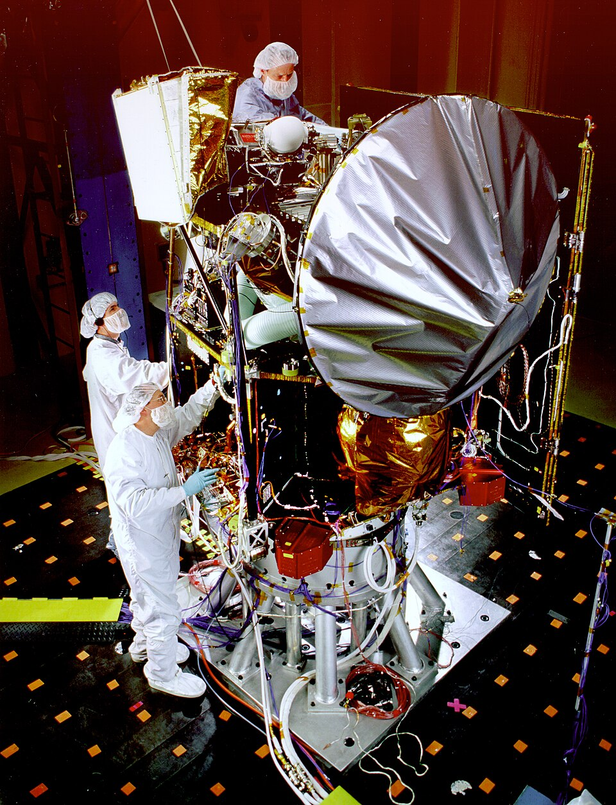
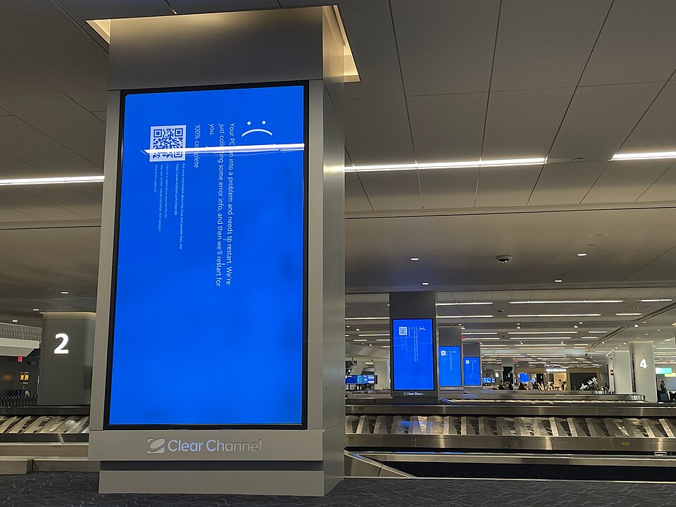

Chapter 5 · Systems Analysis and the Life Cycle
Systems Analysis: Why Healthcare.gov Failed Before Anyone Wrote a Line of Code
A website built under contracts estimated at roughly half a billion dollars opened to millions of people and enrolled six of them. The code was unfinished and barely tested on launch day, but the code is not where the story starts. This chapter is about the decisions made three years earlier that had already settled the outcome.
Wanna go analog?or save it as a PDF; the navigation drops out
The website was Healthcare.gov, and the people who built it were not careless. Every contractor delivered its own piece, and most of the pieces worked. That is what makes it the most useful failure in this book so far. A system can be built competently, one piece at a time, and still fail, because the decisions that matter most are made before anyone builds anything. Managers make them.
By the end of this chapter you should be able to:
- Distinguish systems analysis from systems design, and name the questions each one answers.
- Explain why analysis is the cheapest place to be wrong, and what feasibility analysis is for.
- Write a testable requirement, say whether it is functional or non-functional, and explain what scope creep does to one.
- Name the six phases of the software development life cycle, place a failure in the phase it escaped, and say what waterfall and agile each bet on.
- Read Healthcare.gov as a failure of analysis and governance rather than of code.
1Systems analysis and design
Chapter 4 argued that a process has to be understood before it is worth automating. This chapter picks up where that one stopped. Once you understand a business process, how do you build an information system that captures it properly? That is the question this chapter answers.
1.1 Two questions before any code
Nobody builds an information system without any planning, by sitting down and writing code on day one. Before that, somebody has to figure out two things: 1. what the system is supposed to do, and 2. how the system is going to do it.
Figuring out what the system is supposed to do is called systems analysis. To do that, analysts ask questions such as: Who will use this system? What does it need to keep track of? What other systems does it have to talk to? How will we know it works?
Figuring out how the system is going to do it is called systems design. Systems design involves more technology-related questions, like: How will the data be organized? Which parts of the information system do we build? Which parts can we buy? What will the person at the screen actually see, and what do they actually need to see?
When you put analysis and design together, you have systems analysis and design, which is what this chapter is about.
Sections 1 and 2 use one example throughout, and it is one you know from the student side: your university is replacing its course registration system. You have used one, and you have probably been frustrated by one. Before going further, try sorting some real decisions from a project like that into the two kinds.
Eight decisions from the course registration project. For each one, decide whether it answers a what question (analysis) or a how question (design). Some of them sound technical and are not.
If a decision has a number or a technical word in it, you may want to call it design. Ask a different question instead: does it say what the system must do, or how it will do it?
1.2 Why it matters: the cheapest place to be wrong
Why should a business care about any of this? Because almost every business now runs on information systems, and almost every business will build, buy, or replace one. A bank replaces its loan system. A hospital changes its medical records. A coffee chain adds mobile ordering. Each of those projects succeeds or fails on its analysis and design, and the people making those decisions are managers as often as they are programmers.
The main reason is cost. Mistakes get more expensive the longer they go unnoticed. A misunderstanding caught in a conversation costs a conversation. The same misunderstanding caught after launch costs rework, retraining, and, if the system is important enough, a congressional hearing. A common estimate says the cost of fixing a mistake goes up about ten times at every phase it survives. When NASA measured this on its own projects, the early steps were smaller than that and the late ones were far larger. A requirements error that cost 1 unit to fix during requirements cost 3 to 8 units during design, 21 to 78 during testing, and from 29 to more than 1,500 once the system was in operation. So analysis is not about being careful for its own sake. It is the cheapest place to be wrong.
Now look at systems analysis in the terms from Chapter 1. Nobody is choosing hardware or software yet. That is on purpose. The important questions have to be asked first, because the technology choices depend on the answers. What gets settled during analysis is what the system will record, which people will be responsible for which steps, and which other systems it must exchange data with. Those are the data, people, and network components. They get settled in conversations and meetings, months before anyone can point at a machine.
1.3 Before either one: should the system exist at all?
One question comes even before analysis starts: should this system be built at all? Answering it is called feasibility analysis, and it happens before anyone commits money to the project.
Feasibility is judged three ways. Technical feasibility asks whether the system can be built with the people and technology you can actually get. Economic feasibility asks whether it is worth what it will cost. Operational feasibility asks whether the organization will use it the way you are assuming, on the schedule you are assuming.
Here is how that looks for course registration. Technically, it is ordinary, because universities have run online registration for decades. Economically, it will cost millions of dollars, which has to be weighed against the staff hours spent every term fixing schedules by hand. Operationally is where the hard question is. The new system has to be live for spring registration, and that date comes from the academic calendar, so it cannot move. If the honest answer is "only if the date moves," the project is not feasible as planned, and somebody has to say so.
Operational feasibility is the one most often approved without a real look, because it is the only one that requires somebody to say something unwelcome about their own employer. Sometimes the right answer is that the system should not exist, or should not exist yet. That answer is cheap at this point. It is never cheaper again.
2Systems analysis and design, question by question
Section 1 asked eight questions, four for analysis and four for design. This section answers them in order, one subsection each, using the same course registration project. The order matters. Every design question depends on answers from analysis, which is why analysis comes first.
2.1 Systems analysis: Who will use this system?
Start with people, because every other answer comes from them. A stakeholder is anyone with a stake in the system: the people who will use it, the people who pay for it, and the people who live with its results. For course registration, that list includes students, advisors, faculty, the registrar's office, the billing office, and the IT staff who will run it. Each group needs something different, and some of those needs conflict. Students want to see every open seat. The registrar wants holds enforced before anyone enrolls.
The work of finding out what each group needs is called requirements elicitation. Each standard method has a characteristic blind spot, which is why serious projects use several.
| Method | What it is good for | Its blind spot |
|---|---|---|
| Interviews | Asking people what they need. Fast and essential | People describe the job they think they do, not the job they actually do |
| Observation | Watching the work happen. The only method that reliably finds workarounds, the second spreadsheet, and the step everybody does and nobody mentions | Slow, and people may work differently while being watched |
| Document analysis | Reading the forms, reports, and rules the current process produces. Good for regulated work | It tells you what was true when the document was written |
| Workshops | Putting disagreeing groups in one room to settle it in front of each other. The only method that surfaces conflicts between stakeholders | Expensive in calendar time, and the loudest person can take over |
| Prototypes | Showing people something and watching them react. People are far better at criticizing a thing than describing one | People react to what they see, and may not mention what is missing from it |
The person who does this work has a job title, and it is one many of you will hold: business analyst. The role sits between the people who need the system and the people who will build it, and its output is the specification everything later depends on.
Notice what none of these methods can do on its own. Every one collects requirements from somebody who already exists and can be asked. When a system is for people who have never done this before, there is no process to observe and no experienced user to interview. Then prototypes and pilots stop being good practice and become the only honest source of information. Keep that in mind until the end of the chapter.
2.2 Systems analysis: What does it need to keep track of?
Once you know who will use the system, you can ask what it has to do for them, and what it has to record to do it. The answers are written down as requirements. A system requirement is a statement of what the system must do or be, written down before anybody builds anything. For course registration, one requirement might be: "The system shall record each student's account holds and prevent enrollment while a hold is active."
Requirements are the hardest thing a project produces, because they ask people to put into words a need they have never had to state. When a large project fails, this is usually where it failed. The team built exactly what was specified, and what was specified was a misunderstanding.
Requirements come in two kinds. Functional requirements describe what the system must do: its behavior, and the facts it must record to do it. "The system shall record each section's seat limit and stop enrollment when the section is full" is a functional requirement. Non-functional requirements describe a quality the system must have: how fast, how many users at once, how secure, how available. "Registration pages shall load in under two seconds with 20,000 students signed in" is a non-functional requirement. Organizations skip the non-functional ones more often, and those are the ones that produce public failures, because you cannot see them missing until the load arrives.
The standard way to write a requirement down is the user story, and the format is deliberately rigid:
As a [kind of person], I want [to do something], so that [I get some result].
For example: "As a part-time student, I want to see which sections still have seats, so that I can build a schedule around my job." The third clause is the one that matters and the one people drop. "As a student, I want to log in" is not a user story, because it never says what logging in is for. Adding the reason invites a useful argument: does a student need to log in before seeing open seats, or only before enrolling? The format forces that argument to happen early, when it is cheap.
Requirements also keep arriving after the plan is set. Scope creep is the slow growth of what a system must do after the cost and schedule estimates have been fixed. Each new request is reasonable on its own, and nobody moves the schedule to pay for it. Scope creep is rarely the result of anybody behaving badly. It happens because every stakeholder pushes requirements in while no single person owns the whole.
Scope creep matters because of a limit every project lives with. Scope, schedule, and quality are linked, and the three together are usually called the iron triangle: fix any two and the third moves on its own. When a deadline is set by something outside the project, such as a law or the academic calendar, and nobody will cut scope, the only side left to give is quality. The fix is a procedure, not willpower. First agree on what is being built. Then require every addition to arrive as a change request that states its cost in time and money and is approved or refused by someone accountable.
2.3 Systems analysis: What other systems does it have to talk to?
Almost no system stands alone. Course registration has to send credit hours to billing, check holds from the business office, read prerequisites from transcripts, and pass class lists to the learning management system faculty use, such as Canvas. Each of those connections is an interface: a boundary where one system hands data to another.
Every interface needs an interface specification, a written agreement about exactly what crosses the boundary: which fields, in what format, in what units, and how often. It sounds too obvious to bother with. It is not. Suppose the registrar counts a lab as one credit hour and billing counts it as two. Both systems work correctly by their own rules, and every lab student gets the wrong bill. One line in a specification would have settled it in a meeting.
The same boundary raises a question that testing alone cannot answer: whose job is it? Each team tests its own system against its own understanding of what crosses. Integration testing runs two or more systems together to check that what one sends is what the other expects. It catches the mismatch, but only if somebody has decided to do it. That somebody has a name. The systems integrator is the party accountable for making independently built components work as one system. In plain terms, it is the one person or company whose job is making sure all the pieces fit together. It is not the same job as building the biggest piece, and it cannot be done part-time by whoever happens to be largest.
Where the role is vacant, a distinctive failure follows, and it does not look like failure until the end. Every vendor delivers its own piece to its own specification. Every piece passes its own tests. The assembled system does not work, nobody has breached a contract, and there is no clause to invoke. You will see this twice in this chapter, once in a mini-case and once in the main case, at national scale.
2.4 Systems analysis: How will we know it works?
The last analysis question sounds like it belongs at the end of the project, during testing. It does not. You decide how you will know the system works before you build it, because you can only test for what somebody wrote down.
That is done with acceptance criteria: specific, checkable conditions that decide whether a requirement is met. "Registration should be fast" is not an acceptance criterion, because nobody can pass or fail it. "A student can register for a full schedule in under five minutes, with 20,000 students signed in at once" is one. Notice what writing that sentence required: a number. Somebody had to find out how many students register in the first hour, and write it down.
The rule to remember: a requirement nobody can test is not a requirement, it is a hope.
This is why missing non-functional requirements do so much damage. A missing functional requirement produces one missing feature. A missing non-functional requirement, such as how many people will use the system at once, gets passed down into every later decision. How many servers to rent. How to structure the database. What to do with people who arrive while the system is busy. Each of those decisions has to assume a number. If nobody supplied one, each team assumes its own, and nobody finds out whose was wrong until the real number shows up. Nobody can test for it either. A load test runs the system with as many people as it expects on its busiest day, and it needs a number to test against. A missing requirement does not just produce a missing feature. It produces a missing test.
Teams also agree on a definition of done, a standing checklist that applies to every piece of work: code checked by a second programmer, tests written, and documentation updated. It makes "done" mean the same thing in March as it does in September.
2.5 Systems design: How will the data be organized?
Design starts where analysis stops. Analysis produced a list of facts the system must record. Design decides how those facts are arranged, so the system can find them, combine them, and keep them consistent.
The plan for that arrangement is called a data model. It names the things the system keeps track of, called entities; the details recorded about each one, called attributes; and how the entities connect, called relationships. In course registration, the entities include Student, Course, Section, and Enrollment. A Section has attributes like its time, room, and seat limit. The relationships carry the rules: one course has many sections, and one student has many enrollments, each one linking that student to one section.
These decisions are expensive to change later, because every screen and every report is built on top of them. If the model allows only one instructor per section, every team-taught course becomes a workaround for as long as the system runs. Chapter 7 goes much further into how databases are designed. For now, the point is that this structure decides which questions the system can answer cheaply, and which it cannot answer at all.
2.6 Systems design: Which parts do we build?
Some parts of a system are worth writing yourself. Custom software, also called in-house development, is software written for one organization, by its own programmers or by a contractor working to its specification. You get exactly what you specified, and nobody else has it.
That second part is the reason to build. Chapter 3 argued that technology you can buy is never a competitive advantage, because your competitors can buy it too. So build the part that makes your organization different, and only that part. For a university, that might be the rules for which students register first, or a waitlist that follows a policy no product on the market supports.
Building has costs that are easy to underestimate. You own every defect, every security fix, and every upgrade for as long as the system runs, and section 3 shows that most of a system's cost arrives after launch. You also need people who understand the code, so the system lasts only as long as you can keep them.
2.7 Systems design: Which parts can we buy?
Most of a modern system is bought, not built. Off-the-shelf software, sometimes called commercial off-the-shelf or COTS, is a product sold to many organizations, each of which sets it up for its own use. More and more of it is now rented rather than owned, as software as a service (SaaS): the vendor runs the software on its own computers, called servers, and you use it through a browser for a subscription fee. Universities commonly buy registration as one part of a larger student information system from a vendor, rather than writing it themselves.
Buying is faster and usually cheaper, and somebody else fixes the defects. The price is fit. The product was designed for an average customer, so you either change your process to match it or pay to customize the product, and customizations are what break when the vendor releases an upgrade. Chapter 8 is about what happens when a company makes that choice at enormous scale.
The choice between the two is usually called build versus buy, and the table below sets it out side by side.
| Factor | Build (custom) | Buy (off-the-shelf or SaaS) |
|---|---|---|
| What you get | Exactly what you specified, and nobody else has it | What the vendor designed for its average customer |
| Speed | Slow: months to years before anything works | Faster: weeks to months to set up |
| Cost | High up front, and you pay for every fix and upgrade | Lower up front, plus license or subscription fees for as long as you use it |
| Who fixes defects | Your own team | The vendor |
| Best for | The part that makes your organization different | Anything that works the same way everywhere, such as payroll or email |
| Main risk | Depending on the few people who understand the code | Bending your process to fit the product, or customizations that break on upgrade |
One warning applies whichever you choose. You can buy software, and you can hire contractors to build parts of it. You cannot buy somebody to own the whole. Every bought piece still has to talk to every other piece, which brings you back to the systems integrator in section 2.3.
2.8 Systems design: What will the person at the screen see?
The last design question is the one users judge everything by. The user interface is every screen, button, message, and form a person uses to work with the system. To the person using it, the interface is the system.
The question has two halves, and they are different. What a system can show is usually far more than what a person needs. A registration screen could show a student's full transcript, every hold, every fee, and every section of every course. What the student needs at that moment is short: which sections fit, which have seats, and what is stopping them from enrolling. Good interface design is mostly deciding what to leave out.
Designers work this out cheaply, before building. A wireframe is a rough sketch of a screen's layout, often on paper. A prototype is a clickable mock version that looks real but does nothing behind the screen. Prototypes appeared in section 2.1 as a way to gather requirements. Here they test a design. Put one in front of real users, watch them try to finish a real task, and you learn things no meeting will tell you.
Here is the kind of thing a prototype finds. Suppose a late rule says students must clear every account hold before they can see the course catalog at all. In a meeting, it sounds sensible. In front of a prototype, a student with a five dollar library fine cannot see a single course, and somebody finally asks the question the rule never got: does a hold need to block browsing, or only enrolling? Interface design also has to work for everyone, including people who use a screen reader or a keyboard instead of a mouse. Chapter 11 covers accessibility, and the law behind it, in detail.
2.9 The eight questions on one page
Here are the eight questions together, with the concepts that answer each one. Keep this table nearby when you read the main case, because every one of these questions came up there, and several were never answered.
| Question | Core concepts | Course registration example |
|---|---|---|
| Analysis: Who will use this system? | Stakeholders, requirements elicitation, business analyst | Students, advisors, faculty, registrar, billing, IT staff |
| Analysis: What does it need to keep track of? | System requirements, functional and non-functional requirements, user stories, scope creep, change requests | Holds, seat limits, credit hours |
| Analysis: What other systems does it have to talk to? | Interfaces, interface specification, integration testing, systems integrator | Billing, transcripts, the learning management system |
| Analysis: How will we know it works? | Acceptance criteria, definition of done | A full schedule in under five minutes with 20,000 students signed in |
| Design: How will the data be organized? | Data model: entities, attributes, relationships | Student, Course, Section, Enrollment |
| Design: Which parts do we build? | Custom software | A waitlist that follows the university's own rules |
| Design: Which parts can we buy? | Off-the-shelf software, SaaS, build versus buy | A vendor's student information system |
| Design: What will the person at the screen see? | User interface, wireframe, prototype | A schedule screen that shows only what blocks enrollment |
3The software development life cycle
Sections 1 and 2 covered the two activities where the expensive decisions get made. But analysis and design are not the whole project. After them, somebody still has to build the system, turn it on, and keep it running. Every information systems project, whatever it calls itself, passes through the same six phases. They are deciding whether it is worth doing, working out what is needed, deciding how to build it, building and checking it, turning it on, and keeping it running. That sequence is called the software development life cycle (SDLC). Systems analysis and systems design are its second and third phases. Each phase has a question attached, and skipping the question does not skip the consequence.
Keep one thing in mind as you read the phases. A systems project is not just building software. It is assembling an information system, which means all five components have to arrive at the same moment and fit each other.
The hardware has to be sized for a load somebody estimated. The software has to be written to a specification somebody wrote. The data structures have to be agreed on with whoever owns the data. The network connections have to be negotiated with other organizations. And the people have to be trained to use the result. Software is the component teams talk about most, because it is the one they build themselves. But it is not usually the one that fails, and the main case at the end of this chapter is a good example of that. Watch for which components break when you get there.
3.1 The six phases of the SDLC
In real life, SDLC terminology varies by organization. One firm says "discovery" where another says "analysis," and one textbook lists five phases where another lists seven. The activities do not change. Do not memorize any one firm's labels. Learn the six activities and you can translate whatever your employer calls them. Here they are, with the registration project as the example:
- Planning: deciding what problem you are solving, whether it is worth solving, and what it will cost. This is where feasibility analysis happens. Example: the university decides the old registration system is worth replacing, and sets a budget.
- Analysis: working out exactly what the system must do, for whom, and how you will know it works. Example: interviewing advisors, and writing down how many students register in the first hour.
- Design: deciding how the system will be structured: its data, its screens, its connections, and which parts to build or buy. Example: choosing a vendor's product and sketching the schedule screen.
- Implementation: building, configuring, and testing it. Example: setting up the product, writing the waitlist feature, and running the system at full volume before launch.
- Deployment: putting it in front of real users. A team can turn it on for everyone at once, which is called direct cutover, or for a small group first, which is called a pilot. Example: opening the new system to graduate students one week before everyone else.
- Maintenance: fixing, improving, and eventually retiring it. Example: changing the holds rule when the business office changes its policy.
The phases are a checklist of questions somebody has to answer, not a calendar. Many organizations also put a review between phases, called a stage gate, where someone with authority decides whether the project may move on. A stage gate is only useful if it is allowed to say no.
3.2 Maintenance: the phase that never ends
Students, and a surprising number of executives, treat launch day as the end of a project. The launch of a system is really closer to the beginning of its real life: the point where it starts serving real people. Most of the money is spent after launch day rather than before, and industry estimates commonly put maintenance above half of total lifetime cost.
Maintenance is also not one activity. It comes in four kinds, and only the first is the one you are probably picturing:
- Corrective. Fixing defects that real users have run into.
- Adaptive. Keeping up with a changing world outside the system: a new tax rule, a new browser, a supplier changing a data format.
- Perfective. Improving what already works, because users have asked or because the team has learned something.
- Preventive. Work done now to stop a future failure. It is the easiest to defer, it never shows up as a visible benefit, and putting it off is how technical debt builds up: problems left for later, which cost more the longer they wait.
One more activity belongs in the maintenance phase, and businesses almost always skip it. A post-implementation review asks, some months after launch, whether the system delivered what the business case promised, and what the organization should do differently next time. It is often skipped because everyone is exhausted, because the answer may be embarrassing, and because the people who made the decisions have often moved on. An organization that never does it cannot learn from its own projects, which is why the same failures keep appearing in this chapter across decades.
3.3 Waterfall versus agile: two ways through the phases
The SDLC tells you which phases a project goes through. It does not tell you how many times you go through them, or how much analysis and design you finish before building starts. Those choices are set by a development methodology, an agreed way for a team to move through the phases. There are two main families, and choosing between them is a decision you will actually face. The difference comes down to one question about analysis and design: can you get them right in one pass at the start, or will you need to keep revisiting them as you learn?
Waterfall assumes you can get them right at the start. It runs through the phases once, in order, and each phase finishes, with signed-off documents, before the next one begins. Analysis is completed and frozen, then design is completed and frozen, and only then does building start. Its strength is predictability: fixed scope, fixed price, and a contract an organization can buy against. Its weakness is that all the learning arrives at the end, when acting on it is most expensive.
Agile assumes you cannot get them right at the start, and plans for that. Instead of one long pass, the team goes through analysis, design, building, and testing again and again, in short cycles called sprints that usually last one to four weeks. Each sprint ends in working software a real user can react to. A product owner, the person responsible for what gets built, then re-ranks what comes next based on what the team learned. So the plan absorbs learning instead of resisting it. Its weakness is the mirror image of waterfall's: scope and cost are uncertain up front, which contracts and legislatures dislike.
The rule is this. Waterfall suits stable, well-understood requirements, such as moving payroll to a new system. Agile suits discovery, meaning anything customer-facing being built for the first time. So the question to ask is not which method is better, but how much of this system somebody already knows.
| Factor | Waterfall | Agile |
|---|---|---|
| Trips through the phases | Once, in order | Again and again, in sprints of one to four weeks |
| Analysis and design | Finished and signed off before building starts | Revisited every sprint, as the team learns |
| First working software | Near the end of the project | At the end of the first sprint |
| Strength | Predictable scope, price, and contract | The plan absorbs learning instead of resisting it |
| Weakness | Learning arrives at the end, when change is most expensive | Scope and cost are uncertain up front |
| Best for | Stable, well-understood requirements, such as moving payroll to a new system | Anything customer-facing being built for the first time |
Neither one is a virtue, and you should be suspicious of anyone who presents them that way. They are two different bets about how much you can know in advance, and the only question worth asking is which bet the work in front of you supports.
3.4 What AI changes, and what it does not
AI tools can now write working code from a description in plain English. It would be easy to conclude that analysis and design matter less now, because building has become so cheap. The evidence so far points the other way.
Think about where the time goes. When writing code was the slow part, a vague requirement could hide behind the build, because building took long enough for somebody to notice the problem. When a model can produce a working draft in an afternoon, the description it works from becomes most of what is left. A model given the wrong requirement builds the wrong system, faster, and the result looks convincing. AI speeds up implementation. It does not answer any of the eight questions in section 2 for you.
The software industry is responding by putting analysis back at the center. In 2025, GitHub released a free toolkit for what it calls spec-driven development. The team writes the requirements and a design plan first, in plain language, and the AI coding tool builds from that written specification instead of from a quick prompt. That is section 2's analysis and design, rebuilt for AI tools.
Research on software teams points the same way. Google's 2025 DORA report on AI in software development found that AI works as an amplifier. It does not fix a team. It makes what is already there stronger, including the weaknesses. A team with clear requirements gets more out of AI. A team without them gets its problems sooner.
So the business analyst's job is not disappearing. The ability to say exactly what a system must do, for whom, and how you will know it works is becoming the most valuable part of building one. Chapter 4 made this point about processes. It is the same point about projects.
4Mini-cases: two short failures, two phases
Before the main case, here are two short ones. Section 1 claimed that a mistake gets more expensive at every phase it survives. That claim is easier to believe when you watch it happen. The first mini-case is about the boundary between two systems, which section 2 treated as an analysis question. The second is about the last two phases of the SDLC from section 3: how a change reaches real users, and what happens when it reaches all of them at once. In each one the fix was available earlier and would have cost almost nothing there. Both had working code.
4.1 Mini-case 1 · 1999: the spacecraft that used the wrong units
NASA launched the Mars Climate Orbiter in December 1998 on a mission costing around $193 million. Nine months later it reached Mars, fired its engine to enter orbit, and was never heard from again. It had come in far too low and broke apart in the atmosphere.

Mars Climate Orbiter during acoustic testing, May 1998. NASA, public domain, via Wikimedia Commons.
The investigation found no broken equipment and no failed component. Ground software built by Lockheed Martin reported the push from each small thruster firing in pound-force seconds, the unit used in the United States. The navigation software at NASA's Jet Propulsion Laboratory read those numbers as newton-seconds, the metric unit. One pound-force is about 4.45 newtons, so every reading was wrong by that factor, consistently, for nine months.
Both programs worked exactly as written. What nobody had specified was the interface between them: which unit crosses the boundary between one team's software and another team's software. That is a requirement, and it is the kind of requirement that feels too obvious to write down.
The phase it escaped: analysis. The component: data. The question nobody answered was the one from section 2.3: what other systems does it have to talk to, and what exactly crosses the boundary? A single line in an interface specification, agreed in a meeting years earlier, would have cost nothing. Instead the error survived design, coding, testing, launch, and nine months of flight, and was found by the planet.
Show the answer
The missing document is an interface specification: one line saying which unit crosses the boundary between the two programs. Each team tested its own software against its own specification, and each passed, because each was internally consistent. Noticing that nothing governs the boundary is the job of whoever owns the whole system, which is the systems integrator from section 2.3, working from requirements a business analyst wrote down. The same gap also meant there was no integration testing, the test that runs the two together across the boundary and checks whether what one sends is what the other expects. That test would have caught the units in an afternoon, because a value in pounds-force fed to software expecting newtons is off by a factor of about 4.5, which is not subtle. The cheap phase was requirements: one line in the interface specification saying which unit crossed the boundary. It was never written, so nobody tested for it, and a spacecraft went into the atmosphere of Mars.
4.2 Mini-case 2 · 2024: the update that went everywhere at once
Early on 19 July 2024, computer screens at airports around the world turned solid blue at almost the same moment. That blue screen is what Windows shows when it crashes so badly it cannot keep running, and people call it the "blue screen of death." Gate agents reached for pens. CrowdStrike sells security software that runs deep inside Windows, which is what lets it stop attacks and also what makes it dangerous when it is wrong. That morning the company released a routine content update to that software, a small file that tells it which new threats to look for, and it went to customers worldwide at essentially the same moment.

Baggage claim at LaGuardia Airport, New York, 19 July 2024. Photograph by Smishra1, Wikimedia Commons, CC BY-SA 4.0.
The update carried a fault that crashed Windows machines on startup, and again on the next startup, so they could not be repaired remotely. Microsoft later estimated about 8.5 million devices were affected. Airlines grounded flights and went back to handwritten boarding passes, hospitals postponed procedures, and broadcasters went off air. Because the machines would not start up, much of the recovery had to be done by a person physically visiting each one.
The software had been through testing. What it had not been through was a rollout. Updates of this kind went to everyone at once, so there was no group of customers who would hit the fault first and no interval in which anyone could notice and stop it. Among the changes the company committed to afterwards were releasing these updates in stages and letting customers choose when to take them.
The phase it escaped: deployment. The component: software, released without a rollout. Every customer was, in effect, in the first wave. Look back at the deployment phase in section 3.1. The alternative to direct cutover is a pilot, a small first group, and releasing in stages is exactly the remedy CrowdStrike adopted afterwards. Notice also when this happened. The update was routine maintenance, the phase that never ends. A system changes far more often after launch than before it, and every change is a small deployment of its own, with the same choice to make.
Show the answer
The argument for speed is real: an update that arrives a day late leaves every machine exposed for a day. It does not survive the numbers. The update was correct on almost every machine and wrong on a class of them, and a staged rollout to one percent would have found that class in minutes with the other 99 percent still running. The delay was worth hours; the outage cost airlines, hospitals, and banks days. So the special case does not exempt security software from rollout strategy. It changes the size of the first wave, not whether there is one.
Six things that went wrong on real projects, including three from this chapter. For each one, name the phase where the mistake was made, not the phase where it was noticed. Those are almost never the same, and the gap between them is what this chapter is about.
If you find yourself wanting to answer "testing" for everything, that is the instinct to argue with. Testing is where problems surface. It is rarely where they were created.
4.3 What the mini-cases have in common
Look at what was working in each case. Two spacecraft teams whose software both passed its own tests. A security update that had been tested and was correct on almost every machine that received it. In neither case was the failure a matter of somebody writing bad instructions.
What each of them lacked was a check that belonged to an earlier phase and would have been cheap there: an interface specification, a staged release. That is the cost pattern from section 1.2, shown twice. The mistake does not become expensive because it is serious. It becomes expensive because it survives.
Now read the main case with one idea in front of you. Healthcare.gov is not one of these two failures. It is both of them at once, plus a rollout with nothing to fall back to, at national scale, on a date set by law.
5Main case · Healthcare.gov: the first day
Sections 1 to 3 gave you the questions every system project has to answer and the phases every project passes through. The mini-cases showed what happens when one question gets skipped. This case shows what happens when most of them do, on a system the whole country was watching.
5.1 What Healthcare.gov is, and what happened to it
Healthcare.gov is the federal government's website for buying health insurance, and it exists because of a law. In March 2010, Congress passed the Affordable Care Act (ACA). The law set up health insurance marketplaces: online stores where people who do not get insurance through an employer can compare private health plans and buy one. Many buyers qualify for tax credits that lower their monthly cost. Others turn out to qualify for Medicaid, the government health program for people with low incomes, instead.
Each state could build its own marketplace or let the federal government run one for it. Thirty-six states chose the federal option. That job went to the Centers for Medicare & Medicaid Services (CMS), the agency inside the Department of Health and Human Services (HHS) that runs Medicare and Medicaid. Until then, CMS's main job was paying health care claims. Now it had to build a shopping website for most of the country. That website is Healthcare.gov, which this case also calls the federal marketplace.
Here is the short version of what happened. Healthcare.gov opened on 1 October 2013. It crashed within about two hours, and on the first day only six people managed to choose a plan. That was after CMS had signed six key contracts to build it, with a combined estimated value of about $464 million, or roughly half a billion dollars, according to the HHS Office of Inspector General. The site stayed mostly unusable for weeks. Then a rescue team got it working in about two months, and by the end of March 2014 about 5.4 million people had chosen a plan through it. The rest of this case explains how a project that large could fail that badly, why the failure had very little to do with code, and how it was fixed.
Here is the timeline of Healthcare.gov, from the law to the end of its first enrollment period. Notice how far apart the important dates are. The decisions that settled the outcome came about three years before the day most people remember.
- Mar 2010The Affordable Care Act becomes law. Marketplaces must open for enrollment on 1 October 2013, with coverage starting 1 January 2014.
- Sep 2011CMS hires contractors to build the federal marketplace while key requirements, including how many people might enroll, are still unknown.
- 2012–2013Contracts multiply, to 60 across 33 companies. No one is named to make the pieces work together.
- Sep 2013The main readiness review, moved from March, happens weeks before launch. CMS launches without the approvals it required.
- Oct 1, 2013Launch. Down within about two hours. Six people choose a plan on day one.
- Oct 2013The site is mostly unusable. By the end of the month, 26,794 people have chosen a plan through it.
- Late OctOne accountable leader is named, and a small team is given authority to decide what to fix first.
- Dec 1Progress report: more than 400 fixes, 50,000 users at a time, pages in under a second.
- Dec 2013More than a million people choose a plan through Healthcare.gov in a single month.
- Mar 2014First enrollment period closes with 5.4 million plan selections through the federal marketplace.
5.2 Planning: a deadline that came from a law
Start where the SDLC starts, with planning and the feasibility questions from section 1.3. Was this system technically feasible? Yes. It was demanding, but its parts were ordinary: show people a catalog, check whether they qualify for help, and take an order. Was it economically feasible? Nobody seriously asked, because the law had already decided it would be built. Was it operationally feasible, for this organization, on this schedule? That is where the trouble was, from the first day.
The launch date did not come from an estimate of the work. It came from the law, so it could not move. Think back to the iron triangle in section 2.2. Schedule was fixed by the law. Scope was fixed too, because the law said what the marketplace had to do, and nobody was willing to launch with less. With two sides fixed before anyone estimated anything, only one side was left to give: quality.
There was a people problem as well. CMS did not employ many people who had built a large consumer website, so it hired that skill from contractors instead of having it in-house. That is a reasonable thing to do. It is also the decision that everything after this follows from, because, as section 2.7 put it, you can buy software and hire builders, but you cannot buy somebody to own the whole.
5.3 Analysis and design: what Healthcare.gov had to do
Now apply the four analysis questions from section 2.
Who would use it? Millions of people buying health insurance, many of them for the first time in their lives. Most had never shopped for insurance this way, so nobody could describe what they would need from the site. That is exactly the situation section 2.1 warned about, and section 6.2 comes back to what it meant for them.
What did it need to keep track of? Each visitor's household, income, and choice of plan. Underneath that, Healthcare.gov had to answer one question about every visitor, in real time, while that visitor waited: who is this person, and what kind of health coverage can they get? Can they buy a private plan on the marketplace? Do they qualify for a tax credit that lowers the price, and how large? Or do they qualify for Medicaid or the Children's Health Insurance Program (CHIP) instead?
What other systems did it have to talk to? This is where the project got hard, because no single agency holds the answer to that question. Income records are at the IRS. Identity is checked through the Social Security Administration. Immigration status is at the Department of Homeland Security. Medicaid eligibility is decided by each state. The plans and prices belong to private insurance companies. To connect them, CMS had a second system built, called the data hub, which passes questions and answers between Healthcare.gov and those organizations. Each of those connections was an interface in the sense of section 2.3, and each one needed an interface specification and somebody responsible for it.
The government's own auditors drew the real thing a year after launch, and it is busier than that list. Count the boxes along the bottom of the figure below.
![A diagram from the Government Accountability Office titled Overview of Healthcare.gov and its Supporting Systems. At the top is a computer monitor showing the Healthcare.gov home page. Below it is a box for the identity management system, then a large box for the Federally Facilitated Marketplace System containing three parts: eligibility and enrollment, plan management, and financial management. Below that is the Federal Data Services Hub, which connects to four groups: eligibility verification (Social Security Administration, Department of Homeland Security, Internal Revenue Service, Equifax); other sources of health coverage (Department of Defense, Office of Personnel Management, Peace Corps, Veterans Affairs); state marketplaces and state Medicaid and CHIP offices; and an oversight system linked to insurance companies.](healthcaregov-systems-gao.jpg)
"Overview of Healthcare.gov and its Supporting Systems," GAO-14-730 (September 2014). U.S. government work, public domain, via Wikimedia Commons.
How would they know it worked? Hold that question. Section 5.5 shows that nobody ever wrote down the most important number.
Then the design question from section 2.7: build or buy? CMS hired builders. By 2013 it had awarded 60 contracts to 33 different companies, according to the Inspector General's later case study of the project. The simplified figure below shows the conceptual layout of what those contracts were building, and the one thing it was missing.
Now the expectation, which matters more than it looks. Before launch, did the people in charge think the site would work? Mostly, yes. The job really was ordinary in its parts. Each contractor really was competent at its own piece, and the pieces really were being delivered. Senior officials said publicly that the site would open and work. That belief was a predictable result of the structure: everybody could see their own piece working, and nobody was responsible for checking the whole. Keep that belief in mind as you read about launch day. The lesson is not that careless people built a bad website. It is that careful people built pieces that did not add up.
5.4 Launch day: October 1, 2013
Reports at the time put first-day visitors at about four million. The site failed within about two hours. Officials said about 250,000 people tried to use it at the same moment, around five times what it had been built for, and most visitors met crashes, timeouts, and error messages for the rest of the week. Congress had also shut down the federal government that same morning, in a dispute over funding this same law, so the launch happened in front of the largest possible audience.
![The top of the Healthcare.gov home page from the launch period. A white header carries the HealthCare.gov logo and links labelled Learn, Get Insurance, Log in, and Español, above a blue menu bar with a search box. Below, over a photograph of a smiling young woman against a blurred green background, white text reads: The Health Insurance Marketplace is Open! Enroll now in a plan that covers essential benefits, pre-existing conditions, and more. Plus, see if you qualify for lower costs. A large green button says Apply Now.](healthcaregov-oct-2013.jpg)
Healthcare.gov home page, launch period, October 2013, via the Internet Archive. U.S. government work, public domain.
The next morning, in a government crisis meeting, somebody read out the number of people who had managed to choose an insurance plan on day one. Six. Across five insurers. The numbers stayed low all month. By the end of October, only 26,794 people had chosen a plan through Healthcare.gov, according to HHS's first enrollment report.
5.5 The failure: what went wrong
It would be easy to file this away as a website that could not handle the traffic. That reading is wrong, and it would cost you money if you carried it into a job. Too much traffic was a symptom. Underneath it were four decisions, and every one of them is a concept from earlier in this chapter. Two government investigations reached the same conclusions: one by the Government Accountability Office (GAO), Congress's own auditors, and one by the HHS Office of Inspector General.
1. Nobody wrote down how many people the site had to handle. CMS hired contractors to build Healthcare.gov and the data hub before it knew key facts, GAO found, including which states the site would serve and how many people might sign up. That is a missing non-functional requirement, the kind section 2.4 warned about. Every team had to guess how big to build. Nobody could run a realistic load test, because there was no number to test against.
2. Nobody was in charge of making the pieces work together. With 60 contracts and 33 companies, somebody had to be the systems integrator from section 2.3. The Inspector General found that CMS never named one. It was worse than an empty job. CMS believed its main contractor, CGI Federal, was doing it, and CGI did not see its role that way. Each company built its own piece, and nobody owned the connections between them.
3. It was switched on for everyone at once, with no way back. Section 3.1 described two ways to launch a system: switch everyone over on the same day, or start with a small pilot group. CMS switched on every feature, in every state it served, on one day. A pilot was available and obvious. The site could have opened in one state, or for federal employees first, or as a small test months before the deadline. That was not tried.
4. The checkpoints were not allowed to stop it. This is the break that let the other three survive. A stage gate, from section 3.1, is only useful if it can say no. According to GAO, CMS moved its main readiness review from March to September 2013, just weeks before launch, and then launched without the approvals that review required. That same month, the main contractor warned CMS in writing that the schedule left too little time to test the system. The reviews that existed to stop the launch were pushed back because the launch was near.
| What broke | The concept | What would have caught it |
|---|---|---|
| 1. No number for how many users | Non-functional requirements and acceptance criteria (2.2, 2.4) | A written capacity number, and a load test against it |
| 2. Nobody owned the whole | Interfaces and the systems integrator (2.3) | One named integrator from the start |
| 3. Everyone switched on at once | Deployment and the pilot (3.1) | A pilot in one state, or for federal employees, months early |
| 4. Checkpoints that could not say no | Stage gates (3.1) | A readiness review held on time, with the power to delay launch |
The way the contracts were written made all of this more expensive. Two facts from the Inspector General's report explain how. First, before choosing CGI Federal for the main job, CMS did not check the government's database of how contractors had performed on past projects, even though CGI had had problems on earlier work for the department. Second, five of the six key contracts were the kind where the government pays the contractor's actual costs, plus a fee. Under that kind of contract, when the work runs over budget, the government pays the extra, not the company. And the work did run over, because, as GAO found, the requirements kept changing. The six key contracts grew from an estimated $464 million to $824 million. One of them grew from $58 million to $207 million.
Notice what is missing from that list: bad code. The software did have real defects, and section 5.7 shows some of them. But they were what an unfinished, untested system looks like, not the reason it was unfinished and untested. The failure lives in a requirement nobody wrote, a job nobody held, a launch with no pilot, and checkpoints that could not say no. Those are decisions made by managers, not engineers. That is why this case belongs in a business school course.
5.6 The recovery: how it got back up and running
So yes, Healthcare.gov failed, badly and in public. But it did not stay broken. Within about two months it was working, and how that happened is just as useful as the failure, because it shows the problem could have been solved all along. Four things changed.
Source: Paste the 11-character YouTube ID into both VIDEO_ID spots. Use the youtube-nocookie embed, as Chapters 1, 3 and 4 do.
Why here: Chapter 4 puts its second video at the same point in its case, the turn from failure to fix. If you use the remarks, keep the caption about the system, not the politics.
One person was put in charge. In late October 2013, the White House brought in Jeffrey Zients, a management expert and former budget official, to lead the repair. For the first time, one accountable person owned the whole system.
Somebody owned the connections. By early December, CMS was publicly referring to QSSI, one of the contractors already on the project, as its systems integrator. The job section 2.3 describes finally had a name next to it.
The team got permission to prioritize. Experienced engineers from technology companies joined the repair. A small team was given one narrow goal, a working site, and the authority to decide what to fix first and what to leave for later.
Progress was measured against numbers. The team finally had targets it could test against, which is section 2.4's question answered at last. On 1 December 2013, the administration released a progress report. It counted more than 400 fixes and said the site could now handle 50,000 people at once and more than 800,000 a day. Pages loaded in under a second instead of about eight, and the site was up 95 percent of the time, compared with 43 percent in early November, according to NBC News.
The results followed. In December alone, more than a million people chose a plan through Healthcare.gov, bringing the total to about 1.2 million by 28 December, according to HHS's January enrollment report. The first enrollment period closed at the end of March 2014 with 5.4 million plan selections through the federal marketplace.
Same law, same insurers, same basic technical problem. What changed was ownership, priorities, and permission to ship less. Shipping less is not free. Every feature postponed and every shortcut taken to make the site work in December became technical debt, the problems-left-for-later from section 3.2, which the organization pays for later in exchange for moving now. It was the right trade, and it was still a debt.
The rescue team did nothing that could not have been done during the original build. It made decisions the original structure was not set up to make: name one owner, give somebody the job of making the pieces fit, fix the most important things first, and test against real numbers. The failure was not a limit of technology. It was an organizational choice, and organizational choices can be made differently.
5.7 The five components at Healthcare.gov
Every chapter maps its case onto the same five components, because a system is only as strong as its weakest one. Healthcare.gov is unusual, because every component shows damage. The useful question is which damage was a cause and which was a symptom.
The software had real problems. The contractor's September warning, from section 5.5, also said that the data hub the site depended on was sometimes unavailable. After launch, the enrollment files the site sent to insurers were often wrong, with enrollments duplicated, missing, or carrying the wrong details. All of that is true, and all of it traces back to the same row of the table.
| Component | What happened | Cause or symptom? |
|---|---|---|
| Hardware | Sized for a number nobody had written down, and overwhelmed by about 250,000 people at once | Symptom |
| Software | Unfinished and barely tested at launch. Real defects, mostly fixed within weeks once somebody owned the whole | Symptom, and the place the damage showed first |
| Data | Records at the IRS, Social Security, and Homeland Security were sound. The enrollment files sent to insurers often were not | Symptom |
| Networks | Live links to federal agencies, states, and insurers existed, but nobody owned them as a whole | Symptom of the missing integrator |
| People | 33 companies, no integrator, and checkpoints that could not say no. Nobody was accountable for the whole | Root cause |
Read the last column from top to bottom. The root break was in people, and the damage showed up first in software. An unfinished, untested system with nobody responsible for the whole is what a missing integrator and a squeezed schedule produce. The hardware shortfall and the bad enrollment files came from the same decisions.
5.8 What happened next, which is not a tidy ending
The failure had institutional consequences, and they are worth following, because most textbooks stop at the recovery.
Britain had created the Government Digital Service in 2011 to build public services with government employees rather than contractors. In 2014, directly in response to Healthcare.gov, the United States created two similar organizations. One was the United States Digital Service, inside the Executive Office of the President. The other was 18F, inside the General Services Administration, named for the agency's address at 1800 F Street. Both hired designers, engineers and product managers onto the public payroll, and both worked on the way government buys technology, which this chapter has been criticizing.
They built things you have probably used: Login.gov, the single sign-on for federal services; cloud.gov; and the U.S. Web Design System, which is why federal websites now look and behave alike. 18F supported the IRS in building Direct File, free online tax filing, which ran for two filing seasons.
Then the arrangement came apart, and it is worth being precise, because the loose version of this story is wrong in both directions. In January 2025 an executive order renamed the Digital Service as the United States DOGE Service and created a temporary organization inside it, due to dissolve on 4 July 2026. On 1 March 2025, weeks before its eleventh anniversary, 18F was eliminated and its staff laid off. In early November 2025 the IRS told its Direct File partner states the service would not run in the 2026 filing season and that no future date had been set. Later that month the head of the Office of Personnel Management said the temporary organization no longer existed as a centralized entity, while a spokesperson said it did and named an acting administrator. The renamed Digital Service itself continued, and in April 2026 one of its directors described it as growing, with roughly 90 staff placed across agencies.
Set that beside the rest of the chapter without deciding how you feel about it yet. The lesson Healthcare.gov taught in 2013 was that capability has to live inside the organization that needs it, because you cannot contract for judgment. Of the two organizations built on that lesson, one lasted about eleven years and the other still exists under a different name and a different mandate. Whether that is evidence the response was wrong, evidence that this capability is unusually hard to sustain, or evidence of something else is a real question, and this book will not hand you the answer. What is not in question is the finding underneath it, which is older than both agencies: somebody has to own the whole, and that somebody has to be allowed to say no.
5.9 Since 2013: government technology and AI today
The main case is from 2013, and you are entitled to ask whether any of it still applies. There are two answers, and they point in different directions.
The tools for testing and launching carefully have become cheap. Almost every failure in this case was expensive to prevent in 2013 and is close to free to prevent now.
- The pilot is now a setting. A feature flag lets a team release something to one percent of users, watch, and then expand it or switch it off within minutes. In 2013, a pilot meant building and running a separate release. Today it can take an afternoon, which removes the last respectable excuse for switching everyone on at once.
- Releases go out in stages. The tooling to give an update to one percent of customers and then expand is standard, which is why the company in section 4.2 had it available and why its own remedy afterwards was to start using it.
- Capacity is rented by the minute. Cloud providers rent out computing power by the minute, so a load test at full volume no longer requires buying the hardware to test with, which is how Chapter 1's Spotify example ran.
- Systems watch themselves. Monitoring now sends an alert to a named person who is on duty, and treats an unanswered alert as its own failure, instead of sending mail nobody reads.
Government is also moving quickly on AI. Some of what changed after Healthcare.gov is in section 5.8: designers and engineers hired directly into government, and shared tools like Login.gov. The newest change is AI. In April 2025, the White House Office of Management and Budget told federal agencies to speed up their use of AI. It also told them to name a Chief AI Officer and set up an AI governance board to oversee it (summary). The General Services Administration, which buys technology for much of the federal government, launched USAi, a shared platform where agencies can test and adopt AI tools in a secure environment. In this chapter's terms, that is an attempt to answer "which parts can we buy?" once, for many agencies, instead of separately in each one.
And yet projects still fail. Not as often at this scale, but often enough that the industry keeps producing case studies, and the explanation is this whole chapter. None of the tools above touches what actually broke at Healthcare.gov. No tool tells you which states the system must serve. No feature flag tells you nobody owns the connections. No monitoring system tells a government that a legal deadline is not a project plan. The tools removed the excuses and left the decisions exactly where they were.
The same is true of AI projects. An agency chatbot that answers questions about benefits still has to answer every question in section 2. Who will use it? What must it keep track of? Which systems must it talk to? And how will anyone know its answers are right? Section 3.4 explained why AI makes those questions more important, not less.
5.10 What a business technology manager takes from this chapter
Strip the case down to what you can reuse anywhere. Four decisions came up in it, and you will be in the room for every one of them.
Write the requirements down, including the ones that sound obvious. Nobody wrote down how many people the site had to serve at once, so contracts were signed to build a thing whose size nobody had specified. The requirement that feels too obvious to state is the one that will not get tested. If a number matters, it goes on paper before anyone builds anything.
Give every connection an owner. The site depended on live links to the IRS, Social Security, and Homeland Security, and no single person owned the whole chain. Every hand-off between two teams or two organizations is a place a system fails, and the cheapest fix in this book is a name next to each one.
Never launch everything to everyone on a date you cannot move. A pilot was available and obvious and was not taken, and any gradual launch would have been cheaper than switching everyone on at once. When someone proposes turning a system on for everyone on the same day, ask what the fallback is, and if there is none, ask again.
Make sure somebody is allowed to say no. Recall what CMS did with its own reviews as the date closed in. Governance is not paperwork. It is the decision, made in advance, about who can stop a project and on what evidence. If the answer is nobody, the project will launch on the date regardless of what the tests say, because that is what a deadline does to an organization with no brake.
6The downside: who gets asked
Everything in this chapter assumes somebody asks the right people what the system must do. In practice, the people who will use a system every day are often the last ones asked, and sometimes they are never asked at all. That is the downside of systems analysis as most organizations practice it. The method is sound. The guest list is the problem.
6.1 The people at the screen
Think about who is in the room when requirements get written. The organization buying the system sends the people who approved the budget, the people who will report on the results, and the IT staff who will run it. The vendor sends analysts and engineers. The people who will spend their whole shift typing into the system are usually somewhere else, doing the work it is supposed to support. Nobody planned to leave them out. They were busy, and the meeting happened anyway.
Hospitals are a clear example. When I studied how nurses use electronic medical records for my dissertation, nurses told me the same thing again and again: the programmers never asked them, and the programmers did not understand nursing.
When a system does not fit the work, people do not stop working. They work around it. They write things on paper and type them in later. They copy an earlier entry and change one line. They keep a second list the system never sees. Section 2.1 said observation is the only elicitation method that reliably finds workarounds. This is the other side of that point. A system built without observation creates new workarounds of its own, and every one is a place where the record and the real work drift apart.
That drift has a cost the people who bought the system rarely see. The data is now being entered by people who do not trust the screen, and they enter what it will accept rather than what happened. The reports built on that data still look precise. They are measuring the workaround.
6.2 Healthcare.gov: nobody to ask
Healthcare.gov had a harder version of the same problem. Section 2.1 pointed out that every elicitation method collects requirements from somebody who already exists and can be asked. The people refreshing the site on October 1 were people without health insurance, many trying to buy it for the first time in their lives, some with conditions that had made them uninsurable until that morning. There was no experienced user to interview and no existing process to observe. A pilot was the only honest way to learn what these people needed, and section 5.5 described what happened to the pilot.
Every week the site did not work was a week they stayed uninsured, and the deadline that pressured the project pressured them too. None of them had a seat in any status meeting. The contractors were paid for the overruns. The waiting was done by the public.
Notice who was inside the recovery, too: a small team with clear ownership, real usage data, and permission to tell the truth about what was broken. Real usage data matters here. It is the closest a team can get to asking millions of people at once what they need. The difference between the three years and the six weeks was not talent. It was structure, honesty, and the political cover to have both.
6.3 Designing for the people who are not in the room
There is a name for taking this problem seriously. Value sensitive design is an approach, developed since the 1990s by Batya Friedman and colleagues at the University of Washington, that treats what people care about as part of the requirements from the first day of a project. It starts with a question most projects skip: who is affected by this system, and what matters to them?
Its most useful idea for a manager is the difference between two kinds of stakeholder. Direct stakeholders use the system. Indirect stakeholders never touch it, but they live with its results. In a hospital, nurses are direct stakeholders in the medical record. Patients are indirect stakeholders. They never see the screen, but their care depends on what gets entered on it. A requirements process that only talks to the buyer misses both groups. One that also talks to users still misses the second.
Value sensitive design does not replace the methods in section 2.1. It changes who they are pointed at. Interviews and observation still do the work. The difference is that the list of people to interview and observe is written down on purpose, before the first meeting, instead of being whoever showed up. For a business technology manager, that list is a deliverable, and it is cheap. It costs a few hours at the start of a project. Leaving it out is how a project ends up with the workarounds in section 6.1.
So when this course says a system failed, keep asking the second question: failed for whom? And before that, ask the question this section is about: who was asked? On any project you join, find out whether anyone has watched the people who will use it do their jobs. If nobody has, you already know where the first workarounds will be.
- Systems analysis decides what a system must do; systems design decides how. Both happen before anyone writes code, and both are where the expensive decisions get made.
- Requirements are the cheapest place to be wrong, and a missing requirement does not just produce a missing feature. It produces a missing test.
- Every project passes through the same activities. The names vary; the phase a mistake escapes from decides what it costs.
- A requirement nobody can test is not a requirement, it is a hope. Healthcare.gov never had the number of users it was supposed to handle.
- Waterfall bets that you can know everything up front. Agile bets that you cannot, and builds so the plan absorbs learning.
- Modern tooling made every failure in this chapter cheap to prevent. Projects fail anyway, because the tools removed the excuses and left the decisions where they were.
7Vocabulary
- User story
- A requirement written as: as a kind of person, I want to do something, so that I get some result. The third clause is the one people drop.
- Acceptance criteria
- Specific, checkable conditions that decide whether a requirement is finished. A requirement nobody can test is not a requirement, it is a hope.
- Value sensitive design
- An approach that treats what people care about as requirements from the start, and asks who is affected by a system, including people who never use it.
- Change request
- A new or altered requirement arriving after the baseline is agreed, priced in time and money, and approved or refused by someone accountable.
- Business analyst
- The person who gathers requirements and specifies what a system must do, working between the people who need it and the people who will build it.
- Requirements elicitation
- The work of finding out what a system must do, through interviews, observation, document analysis, workshops, and prototypes. Each method has a different blind spot.
- Integration testing
- Checking that two or more parts work correctly together, including systems owned by other organizations. The check that would have caught the Mars Climate Orbiter.
- Iron triangle
- Scope, schedule, and quality. Fix any two of them and the third moves on its own.
- Systems analysis
- Determining what a system must do and for whom, before construction begins; its output is the requirements.
- Systems design
- Determining how a system will meet its requirements: how its data, software, hardware, networks, and people fit together; its output is the plan the builders work from.
- SDLC
- The phased sequence from planning through maintenance that structures system development.
- Functional requirement
- A statement of behavior the system must perform. A non-functional requirement states a required quality instead: speed, capacity, availability, security.
- Waterfall
- One pass through the phases with document sign-offs; predictable, and all learning arrives at the end.
- Agile / sprint
- Short cycles each ending in working software; a product owner re-ranks priorities as learning arrives.
- Systems integrator
- The party accountable for making independently built components work as one system.
- Direct cutover
- Moving all users to a new system at once, with no fallback. "Big bang." Its opposite is a pilot, deploying to a limited group first so defects surface where few people see them.
- Stage gate
- A scheduled review with authority to halt a project before the next phase.
- Feasibility analysis
- Deciding whether a system should be built at all, judged three ways: technical, economic, and operational.
- Scope creep
- The slow growth of what a system must do after the cost and schedule estimates are fixed.
- Interface specification
- A written agreement about exactly what crosses the boundary between two systems: which fields, in what format, in what units, how often.
- Data model
- The plan for how a system's data is organized: its entities, their attributes, and the relationships between them.
- Off-the-shelf software
- A product sold to many organizations, each of which sets it up for its own use. Choosing it over custom software is the build versus buy decision.
- Prototype
- A mock version of a system that looks real but does little or nothing behind the screen, built to watch real users react before the real thing is built.
- Technical debt
- Future cost incurred by shipping a shortcut now.
Green: after drafting your own answer, ask an AI to argue against it and press on your weakest claim, sparring partner mode, before you present. Red: submitting or reading out an AI-written answer. The Wednesday discussion tests your reasoning, and everyone in the room can tell the difference.
8Discussion questions
These are the questions for the case that we will discuss in class. None of them get handed in. On Wednesday you run the discussion and I steer it, which means the class is only as good as what you walk in with. Read the chapter, pick the question you have the strongest opinion about, and be ready to say it first.
- Walk the SDLC phases and name the specific decision at each phase that pushed Healthcare.gov toward failure. Which single decision, reversed, would have helped most, and which phase was it made in? Apply
- The site had millions of visitors and six enrollments. Explain to someone with no technical background why "the servers were overloaded" is an incomplete explanation, and name what it is an explanation of. Analyze
- Design the pilot that should have happened. Who is in it, when does it run, and what specific number would have told CMS to delay the October 1 launch? Be concrete about the threshold, because a pilot with no threshold is a demonstration. Apply
- CMS never designated a lead systems integrator, and believed one of its contractors was doing the job while that contractor did not. Whose job was it to notice the gap, at what point in the life cycle should it have been caught, and what would have made it visible? Systems
- The launch date came from a law rather than a project plan. When a deadline is immovable and the system is not ready, what are a manager's real options, what does each one cost, and who pays that cost? Answer for Healthcare.gov specifically before you answer in general. Ethics
9From lecture to lab
This week has one session. Monday is Exam 1, so Wednesday covers the whole chapter: the concepts, the Mars Climate Orbiter mini-case, and Healthcare.gov, with two of the discussion questions in groups. Read the whole chapter before you come, including the CrowdStrike mini-case and section 6, which we will not have time for in class and which are on Exam 2.
This week's lab is Lab 5: Data Analysis, dashboards as honest status instruments, the picture Healthcare.gov's leadership never had.
Go to Lab 5 →10Sources and further reading
- Office of Inspector General, U.S. Department of Health and Human Services, HealthCare.gov: Case Study of CMS Management of the Federal Marketplace (OEI-06-14-00350, issued 22 February 2016). Supports the 60 contracts across 33 companies, the absent lead systems integrator, the misunderstanding over CGI's role, the past-performance database and contract-type findings, the delayed governance reviews, and the contract growth from $464 million to $824 million. The case study runs from passage of the ACA in 2010 through the second open enrollment period, and is the single best document on this case.
- Government Accountability Office, Healthcare.gov: Ineffective Planning and Oversight Practices Underscore the Need for Improved Contract Management, GAO-14-694 (published 30 July 2014). Supports the task orders issued while key requirements were still unknown, including the number and composition of states and the number of potential enrollees, and the roughly $840 million spent as of March 2014. GAO's own contract figures differ slightly from the OIG's because the two counted different sets of contracts over different periods; where this chapter gives a contract number it is the OIG's.
- House Oversight Committee release of the CMS "war room" meeting notes, October 2013, for the six enrollments across five insurers as of the morning of 2 October; and contemporary reporting on the launch and the roughly 250,000 concurrent users against a plan built for far fewer.
- House Oversight and Government Reform Committee, release of CGI Federal's 6 September 2013 status report (30 October 2013), for the contractor's warning that the compressed schedule left too little time for performance, functional, system, and integration testing, and that hub services were intermittently unavailable. Nextgov, December 2013, for CMS's account of the errors in the "834" enrollment files sent to insurers: files never sent, duplicates, and files with wrong details.
- Batya Friedman and David G. Hendry, Value Sensitive Design: Shaping Technology with Moral Imagination (MIT Press, 2019), for value sensitive design, its origins in the 1990s, and the distinction between direct and indirect stakeholders. Friedman and Hendry codirect the Value Sensitive Design Lab at the University of Washington Information School.
- Steven Brill, "Code Red," Time, 10 March 2014, and other accounts of the rescue by Jeffrey Zients and the technology team assembled in late October 2013, for the rescue. The figures from the administration's 1 December 2013 progress report (more than 400 fixes, 50,000 concurrent users, more than 800,000 a day, response under one second, 95 percent uptime against 43 percent in early November) are as reported by CBS News and the AP and NBC News; the report itself has not been located. QSSI as systems integrator: ThinkAdvisor, 1 December 2013, reporting a CMS press call.
- HHS enrollment reports. The first report (November 2013), as covered by NPR, for the 26,794 plan selections through the federal marketplace in October. The ASPE January 2014 enrollment report for the rise of about 1,059,000 in December, to about 1.2 million by 28 December. The 5.4 million plan selections at the end of March 2014 are from HHS's May 2014 enrollment report.
- For section 3.4: GitHub, "Spec-driven development with AI: Get started with a new open source toolkit" (2 September 2025), for Spec Kit and spec-driven development; and Google Cloud, "Announcing the 2025 DORA Report" (23 September 2025), for the finding that AI amplifies a team's existing strengths and weaknesses.
- For section 5.9: Office of Management and Budget memorandum M-25-21, "Accelerating Federal Use of AI through Innovation, Governance, and Public Trust" (3 April 2025), as summarized by Jones Day, for the Chief AI Officer and governance board requirements; and GSA's AI strategy page for USAi. Government AI policy changes quickly; recheck before each term.
- UK Government Digital Service (2011), the United States Digital Service and 18F (both 2014), for the institutional response to Healthcare.gov. For what happened after: the executive order of January 2025 renaming the Digital Service as the United States DOGE Service and creating a temporary organization inside it with a stated dissolution date of 4 July 2026; the elimination of 18F on 1 March 2025; the IRS notice to partner states in the first week of November 2025 that Direct File would not be available for the 2026 filing season, with no future date set; and reporting from late November 2025 in which the head of the Office of Personnel Management described the temporary organization as no longer existing as a centralized entity while a spokesperson said it did and named an acting administrator. The roughly 90 staff figure is from an April 2026 interview with one of the Digital Service's directors. This passage is the most perishable thing in the chapter. It is recent, contested, and reported through news organizations rather than primary documents, and the 4 July 2026 date has now passed. Recheck it before each term.
- The Agile Manifesto (2001). Seventeen authors, four values, twelve principles. It takes two minutes to read, and it is worth reading in the original rather than in summary.
- NASA Johnson Space Center, Error Cost Escalation Through the Project Life Cycle (2004, NASA Technical Reports Server 20100036670). Supports the measured cost of fixing a requirements error found in later phases: 3 to 8 times at design, 21 to 78 at integration and test, and 29 to more than 1,500 in operations. The "ten times per phase" figure in section 1.2 is a widely repeated industry estimate, and this study is why the chapter calls it an estimate.
- NASA, Mars Climate Orbiter Mishap Investigation Board Phase I Report, 10 November 1999. Supports the pound-force seconds against newton-seconds mismatch between ground software and navigation software, and the board's finding that the root cause was the failure of the process to catch the error rather than the error itself.
- CrowdStrike, Remediation and Guidance Hub: Channel File 291 Incident, including the published Root Cause Analysis and its executive summary (6 August 2024). Supports the content update of 19 July 2024, the field-count mismatch that produced the crash, and the two commitments this chapter relies on: staged deployment of this class of update and customer control over when to take it. Microsoft's estimate of roughly 8.5 million affected devices is Microsoft's, published separately in "Helping our customers through the CrowdStrike outage" (20 July 2024), and is an estimate rather than a count. The sector-by-sector disruption is from contemporary reporting.
- Images. Healthcare.gov home page, launch period, October 2013: Internet Archive capture, U.S. government work, public domain. Overview of Healthcare.gov and its supporting systems: GAO-14-730, figure 2 (September 2014), U.S. government work, public domain, via Wikimedia Commons. Mars Climate Orbiter during acoustic testing, May 1998: NASA, public domain, Wikimedia Commons. Baggage claim at LaGuardia Airport, 19 July 2024: photograph by Smishra1, Wikimedia Commons, CC BY-SA 4.0.
- Verification note. Last checked October 2026. Added on this pass: the NASA cost-escalation study, now linked, which replaced an unqualified "ten times per phase" claim with the measured range; and a direct link to Microsoft's 8.5 million estimate. Sections 1 to 3 were restructured; the new course registration examples are hypothetical and make no factual claims. Still unlinked: the claim in section 3.2 that maintenance is commonly estimated at more than half of lifetime cost, which is a widely repeated industry estimate rather than a single finding.
Main case, October 2026. Two errors corrected. The recovery figures previously read 25,000 concurrent users, then 35,000 by 1 December; the 1 December progress report, as reported, gave 50,000. The December enrollment figure previously read "roughly 975,000 in December alone"; 975,407 is in fact the number of people found eligible in October who had not yet chosen a plan, and the December increase on the federal marketplace was about 1,059,000. The anchor paragraph now says the half-billion figure is a contract estimate rather than a cost at launch.
Earlier check, September 2026. Confirmed against the primary documents linked above: the OIG figures (60 contracts across 33 companies, $464 million to $824 million, $58 million to $207 million), the GAO finding that task orders were issued with expected enrollment unknown, the Mars Climate Orbiter unit mismatch, and CrowdStrike's own account of the 19 July 2024 update and the remedies it adopted.
Corrected on this pass: the account of what happened to the Digital Service after January 2025 previously said the organization had stopped operating as a single body by the end of 2025. That conflated two things. What was reported is that the temporary organization created inside it was described as no longer centralized, while the renamed Digital Service itself continued and was later described as growing. The chapter now says that, and says who said which.
Named as unconfirmed, because this book would rather tell you than guess. Three numbers rest on contemporary reporting rather than a primary document: the roughly 250,000 concurrent users on 1 October 2013 (against a plan variously reported as 50,000 to 60,000); and the four million visitors on day one. The "roughly half a billion dollars" in the opening paragraph is the OIG's $464 million original estimated value of the six key contracts, rounded; it is not money spent by launch day, and the text now says so. The chapter's text now attributes each of these to its source where it appears. Where a number here cannot be traced to a primary document, this book says so, which in a chapter about specifying things precisely is the least it can do.